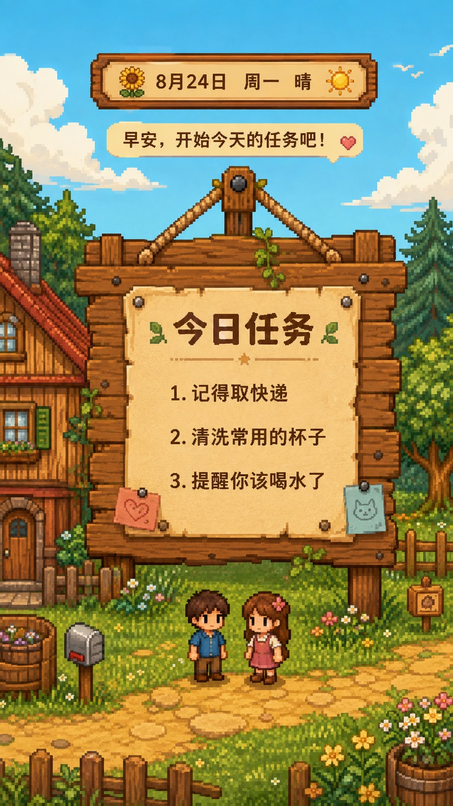

默认提醒需要先选择截止日期，并在设置中开启。
删除后它不会再出现在公告板上，历史留言会保留。
连接情侣空间后，可以看见对方分享的委托并留下小纸条。
iPhone 需先添加到主屏幕，并由你点击按钮后授权。
共享镜像只用于对方查看、留言和提醒；本机 IndexedDB 仍是任务主数据。
烟雾、飞鸟、蝴蝶和飘叶会轻轻动起来。
每台设备需要单独开启；默认不会自动播放。
清除本设备不会删除情侣空间或对方看到的历史镜像。
任务主要保存在本设备；情侣空间仅保存共享镜像、留言和提醒所需数据。
天气位置、显示偏好、BGM 与本地备份不会上传。
💌 留言